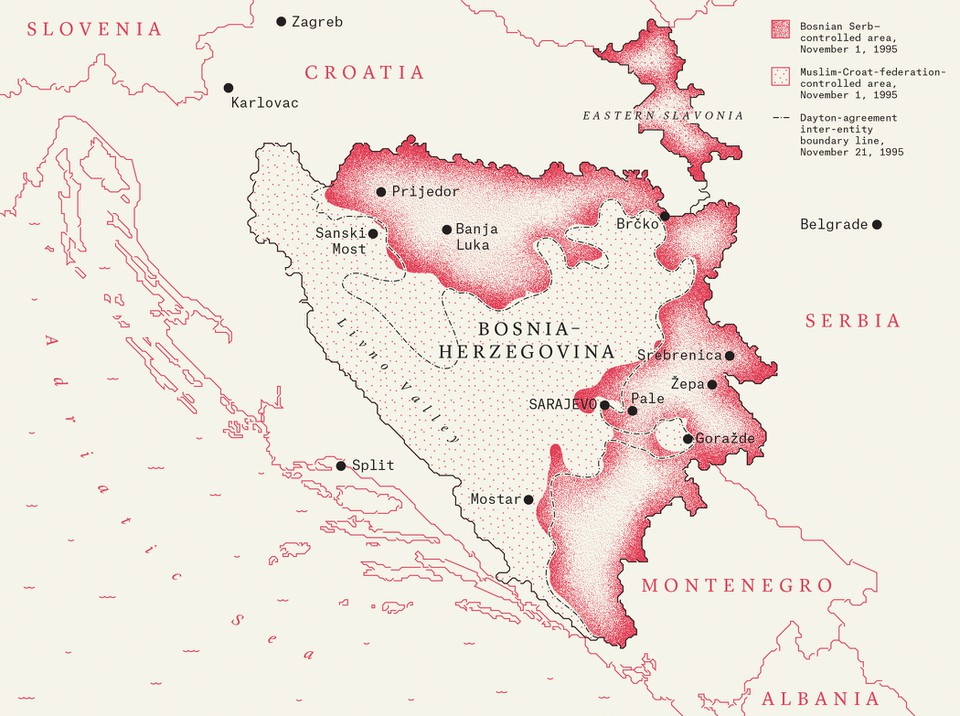
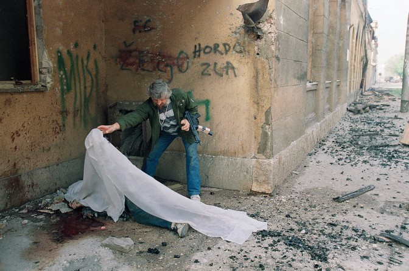
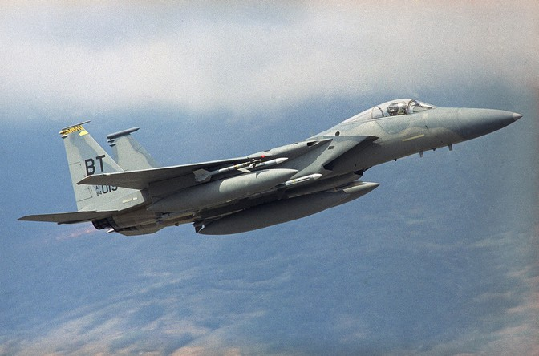
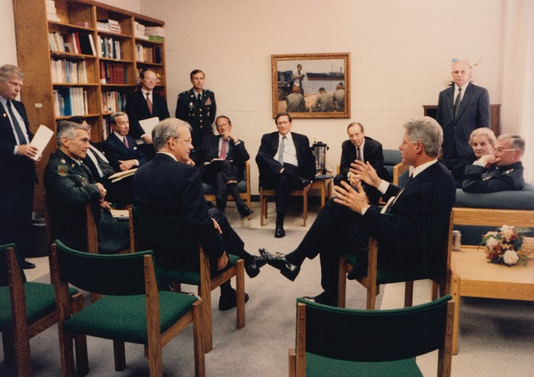
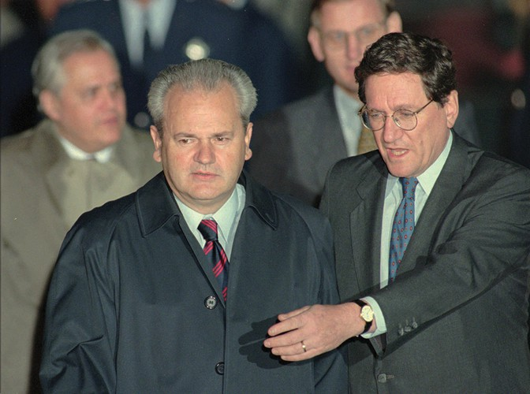
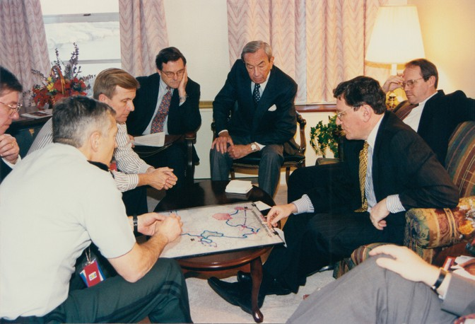
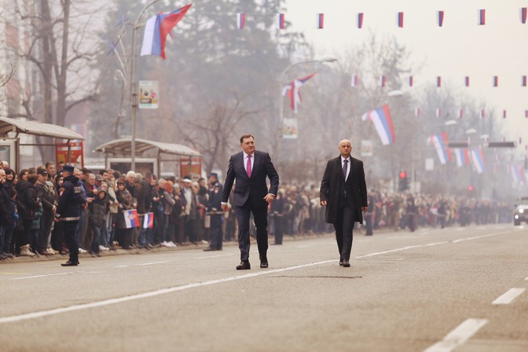

The Atlantic George Packer 2019/05
What the life of Richard Holbrooke tells us about the decay of Pax Americana
What’s called the American century was really just a little more than half a century, and that was the span of Richard Holbrooke’s life. It began with the Second World War and the creative burst that followed—the United Nations, the Atlantic alliance, containment, the free world—and it went through dizzying lows and highs, until it expired the day before yesterday. The thing that brings on doom to great powers—is it simple hubris, or decadence and squander, a kind of inattention, loss of faith, or just the passage of years? At some point that thing set in, and so we are talking about an age gone by. It wasn’t a golden age—there was plenty of folly and wrong—but I already miss it. The best about us was inseparable from the worst. Our feeling that we could do anything gave us the Marshall Plan and Vietnam, the peace at Dayton and the endless Afghan War. Our confidence and energy, our reach and grasp, our excess and blindness—they were not so different from Holbrooke’s. He was our man. That’s the reason to tell you this story.
He served as a diplomat under every Democratic president from John F. Kennedy to Barack Obama, from Vietnam to Afghanistan. But his egotism alienated superiors and colleagues, and he never reached his lifelong goal of becoming secretary of state. He wasn’t a grand strategist, but his frenetic public presence made him the embodiment of certain ideas in action. His views, like everyone’s, emerged from his nervous system, his amygdala, the core of his character, where America stood for something more than just its own power. He believed that power brought responsibilities, and if we failed to face them the world’s suffering would worsen, and eventually other people’s problems would be ours, and if we didn’t act, no one else would. Not necessarily with force, but with the full weight of American influence. That was the Holbrooke doctrine, vindicated at Dayton, where he ended a war and brought an uneasy peace to Bosnia. The country owed its existence to the liberal internationalism of Pax Americana. Now that those words are history, and we’ve retreated into a nationalism whose ugliness more and more reminds me of Balkan politics, we should revisit Bosnia to see what’s lost when America decides to leave the world alone.
Ⅰ. FORMER YUGOSLAVIA — December 1992
It was very cold but there was not yet snow on the ground. The refugee camp was in a barracks town called Karlovac, an hour outside Zagreb, the Croatian capital. Three thousand Bosnian Muslims, mostly men, lived in two concrete buildings. The Bosnians were sleeping in metal bunk beds stacked three high on concrete floors, with clothing draped from the bed frames. In the musty air they waited and waited for word of a new home in another country. The internationals wanted them to return someday to Bosnia, but the men had no such desire.
Holbrooke, who was in the Balkans on behalf of the International Rescue Committee, a refugee organization with a board of prominent men and women, including him, leaned forward with his hands behind his back and stood listening to a young man in a group sprawled on the bunks. He was a baker from Prijedor, a small town in northern Bosnia. The town had been majority Muslim until war broke out in the spring. Then Bosnian Serb paramilitaries came to Prijedor—and to Zvornik, Bijeljina, Omarska, Orašac, Bišćani, Sanski Most, and other towns. Following careful plans, the gunmen would surround a town, block the exits, and go house to house while local Serbs pointed out the Muslim and, in fewer cases, Croat families. The paramilitaries would send the residents out into the street, then loot and destroy the houses. Women, children, and old people were driven out of town and forced to make their way to the relative safety of Croatia. Men were separated into groups. Those whose names appeared on lists of local notables were taken away and never seen again.
The others were sent to concentration camps, where they were starved and made to live in their own filth. The gunmen tormented their prisoners with tales of wives raped and children murdered. They ordered them to perform sexual acts on one another. They forced them to dig mass graves and fill them with the corpses of their friends, their kin. In some towns the paramilitaries were less discriminating and killed every last Muslim. But the goal was everywhere the same: to make the place purely Serb, to render it impossible for Bosnia’s different groups to live together ever again.
When the gunmen came to Prijedor, the baker hid in the woods and watched the Serbs destroy his house. His neighbors—whom he’d known for years and considered friends—found him and turned him over to the paramilitaries. The neighbors did this without remorse. It was the first sign of hatred that the baker had ever seen in them, and the suddenness of it stunned him. When Holbrooke asked why the Serbs had done these things, the baker said simply, “I don’t know.” He was lucky to be a baker and not a notable. He was taken to the concentration camp at Manjača, from which he escaped across the border to Croatia, where he became one of the war’s 2 million refugees.
All of this was called by an ugly euphemism that reflected the thinking of the perpetrators: ethnic cleansing. On an earlier trip to Bosnia, in August, Holbrooke had seen its immediate aftermath: the destroyed houses of Muslims alongside a lonely intact Serb house, the wrecked factories, the fields of rotting corn, the armed Serb bullies, the Muslims lined up to sign away all their property and then be crammed onto buses heading for Croatia. Now he was talking with the survivors.
There was a factory worker from Sanski Most whose Serb foreman came to his house one night in a group of uniformed and armed Serbs. They ordered him to leave the house, and then they blew it up, and the whole time the foreman avoided looking him in the eye. There was a man whose 70-year-old mother had been raped and was still trapped in Sanski Most. Could Holbrooke help get her out of Bosnia? There was an old man who had to drag himself across the bunks to show Holbrooke how the Serb guards had broken his leg. “These Serbs are so awful that they bring their little sons of 10 years old to the camps to watch them beat us,” the old man said.
“Not all the Serbs are so bad,” a younger man said. “But those who refused to participate were killed by the other Serbs right at the beginning.”
The stories were all the same. A savage and inexplicable fever had spread overnight through their friends and neighbors of many years, and now everything was finished.
As Holbrooke started to leave, the baker brought out a dirty plastic bag from under his mattress. Inside was a pair of small figures, three or four inches tall, in blond wood. Human figures, with nearly featureless faces and heads bowed and hands together behind their backs. The baker had carved them with a piece of broken glass while he was interned at the Manjača camp, where the prisoners had stood bound for hours with their heads down to avoid being beaten. The mute simplicity of the figures evoked immense sorrow. As Holbrooke held them they seemed to burn in his hand. He was too moved to do more than mumble a few words and return them.
“No,” the baker said. “Please take them back to your country and show them to your people. Show the Americans how we have been treated. Tell America what is happening to us.”
The cold war was over. Bill Clinton was about to enter the White House, and the United States was at the peak of global power. But the country and its new president were too self-absorbed and distracted to know how to lead the world, or whether they even wanted to. Holbrooke was 51 and in the prime of his career, but he couldn’t get a job in the new administration—his shameless ambition had put off too many important people. Instead of sitting around his New York apartment while the phone didn’t ring, he decided to spend the week after Christmas in the Balkans. He wanted to see the war for himself. With Holbrooke, egotism and idealism were uneasily balanced.

The cold war was over. Bill Clinton was about to enter the White House, and the United States was at the peak of global power. But the country and its new president were too self-absorbed and distracted to know how to lead the world, or whether they even wanted to. Holbrooke was 51 and in the prime of his career, but he couldn’t get a job in the new administration—his shameless ambition had put off too many important people. Instead of sitting around his New York apartment while the phone didn’t ring, he decided to spend the week after Christmas in the Balkans. He wanted to see the war for himself. With Holbrooke, egotism and idealism were uneasily balanced.
In central Bosnia he ran into an old friend from his Vietnam years who was there on a humanitarian mission. They forged a UN identity card for Holbrooke and headed to Sarajevo in a Danish armored personnel carrier. Holbrooke sat in front in his oversize helmet and overstuffed, antiquated flak jacket. It was New Year’s Eve, and the Serb fighters at the checkpoint had already started drinking, there was a woman wearing a lot of makeup, and in the holiday mood they allowed the foreigners through, including Holbrooke and his suspicious card. In the late afternoon the group reached the Sarajevo airport. The buildings were damaged, the runway littered with debris. The airport was under UN control, and the Blue Helmets had orders to let no unauthorized Bosnians leave, though the lucky few who scraped together 1,000 German marks could bribe their way out. UN officials had to negotiate with Serb forces to let humanitarian supplies into Sarajevo—just enough got through to keep the city on life support and the outside world satisfied. The United Nations, too, was part of the siege.
The siege lines hardly ever changed. The point for the Serbs was not to take Sarajevo but to pound it and watch it die.
When Holbrooke emerged from the car, the sky was the color of dirty milk. All around were destroyed cars. Across the road stood the shelled and burned tower of the Sarajevo daily, Oslobođenje, which continued to publish out of a basement bomb shelter. Children were picking through a garbage pile for scraps of wood.
Then Holbrooke saw someone he knew—John Burns, the New York Times correspondent in Sarajevo, leaving a press conference, a bit of a wreck himself. Burns suggested that Holbrooke stay in his quarters at the Holiday Inn. It would be an interesting place to spend New Year’s Eve.
The last stretch of the trip took Holbrooke down a wide boulevard known as Sniper Alley, into the center of Sarajevo. It was the 271st day of the siege.
Snow was falling over the city, over the blackened high-rises and the fresh graves and the Serb batteries in the mountains.
On Bosnian radio the announcer was saying, “The war criminal Radovan Karadžić has said he will not abandon sovereignty over territories which the Serbian people consider their own.”
A reporter for Oslobođenje was burning his books in his fireplace to keep warm.
A classroom of elementary schoolchildren was receiving a lesson on land mines from Italian peacekeepers. Children with cardboard guns were running down a street. A man wiped away tears as he read a letter from his daughter, who had reached safety in Split.
In a small, crowded apartment somewhere in the city, people were singing, clapping, hugging, kissing, raising plastic cups to toast the new year by candlelight.
The Holiday Inn was a yellow-and-brown concrete cube missing most of its windows. In the months before the war, the hotel had been the headquarters of Karadžić’s political party. Now the upper rooms were occupied by Bosnian soldiers, and the hotel was run by a criminal gang with connections at the top of the government. The entrance faced Sniper Alley and Serb guns in the high-rises just across the river, so guests entered through the back, driving at high speed into the underground garage. There was no water and no heat, and rarely electricity. The room rate was $150 a night.
Burns slept and worked in room 305 and used room 306 for storage, stockpiling 2,000 liters of fuel in the bathroom after he caught the garage attendant siphoning his supply to sell on the black market and replacing the stolen fuel with water. Holbrooke was billeted in room 306.
After setting down his things, he knocked on Burns’s door. They sat and talked amid the maps and gear—two small generators, a word processor, and a satellite data transmitter. They had met in Beijing when Burns was a correspondent there, and again in Manila just after the fall of Imelda Marcos, when they explored the abandoned presidential palace together and rummaged through the Marcoses’ closets and Holbrooke tied one of the first lady’s bras around his head, with the cups as ears.
Burns gave Holbrooke his view: This was no war of ancient hatreds in which all sides were equally guilty. There were aggressors and victims. Burns had interviewed the Serb gunners in the hills and seen how clear a view they had of the hospital locked in their artillery range, of the mother and child caught in their high-powered scopes. In the center of Sarajevo, a mosque, a Catholic cathedral, an Orthodox church, and a synagogue stood within a few steps of one another, and all of them were damaged. Sarajevo had been a mixed city forever, and now an army of fascists was destroying it. Nothing would stop the killing except intervention from outside.
They went downstairs to join other reporters in the cold, smoky restaurant for a $30-a-plate New Year’s Eve dinner, served at room temperature by waiters who did their best to keep up appearances in black bow ties and green Holiday Inn jackets. Sarajevo appealed to the part of Holbrooke that had never stopped being a young adventurer with a sense of dark absurdity whose favorite novel was Catch-22.
After dinner, the reporters invited Holbrooke to a party in the Old Town. “You’ll see something right out of Dante’s Inferno,” Burns said.
The party was in an art school on the Miljacka River, just past the spot where World War I began. It was called the Hole in the Wall Club, because you entered by climbing over the rubble of a mortar round and through a gaping hole. Inside it was dark and noisy and thick with cigarette and pot smoke. A live band was playing Stones songs. Foreign do-gooders and reporters and Bosnian aesthetes were crowded next to the small stage, dancing, shouting, hugging, drinking local plum brandy and UN beer. At the stroke of midnight they all threw beer on one another. Everyone was young and beautiful and joyous, and Holbrooke danced in his flak jacket, but he never lost his detachment. He sensed the desperation beneath the wild spirits.
On the first day of 1993, he woke up around 7:30. Sarajevo lay under a crust of snow. Serb guns were ringing in the new year. A cold fog was settling low over the city. A storm was coming, and so was a Bosnian-army offensive.
Around noon he got a ride in an unarmored car on the exposed road to the airport. His guide negotiated with the Danish peacekeepers, but their credentials made them a low priority. Holbrooke sat on the floor reading. He took out his journal and wrote:
If I don’t make my views known to the new team, I will not have done enough to help the desperate people we have just seen; but if I push my views I will appear too aggressive. I feel trapped.
Suddenly there was room on a Canadian C-130. As darkness fell the plane climbed straight up into the sky and veered away from Sarajevo.
Ⅱ. BLOOD OF OUR BLOOD
The question in the Balkans was always how far back to go. Serb nationalists went back to 1389, the year the Serbs fought the Turks to a draw at the Field of Blackbirds in Kosovo and opened the way for the Ottoman empire to conquer the lands of the South Slavs up to the gates of Vienna. The Croatian president, Franjo Tudjman, liked to start with the breakup of the Roman empire. President Alija Izetbegović of Bosnia began his autobiography by noting that Bosnia was first mentioned as a distinct territory in a.d. 958. Every few centuries some new foreign conquerors—Slavs, Ottomans, Austrians—swept through the Balkan Peninsula, leaving a shifting pattern of identities and faiths. The Croats were Roman Catholics, the Serbs were Orthodox, the Muslims were converted to Islam by the Turks. The Serbs used Cyrillic script while the Croats and the Muslims wrote in Latin, but they spoke pretty much the same language. They intermarried. You couldn’t tell them apart by looking at them. They had a violent history, but they didn’t have a genetic predisposition to exterminate one another.
Or you could go back to the start of the 20th century, when two Balkan wars pushed the Ottomans out of Europe, expanded the Serb kingdom, and inflamed the nationalisms that burst out in Sarajevo on June 28, 1914, producing the First World War and then, at the Versailles Peace Conference, the Kingdom of Serbs, Croats, and Slovenes, which became the Kingdom of Yugoslavia. Or, more to the point, you could go back to the Second World War—still a living memory when Yugoslavia entered its death throes in the early ’90s. Hitler and Mussolini attacked the country in April 1941. Serbs were targeted and slaughtered as an enemy race. Croatia became a nominally independent state under a puppet regime of homegrown fascists known as the Ustashe, who subscribed to a belief in their own Germanic origins and racial superiority. The Ustashe killed 400,000 Croatian Serbs, along with tens of thousands of Jews, Roma, and Communist Partisans. Bosnia was absorbed into the Ustashe’s Croatia, which held Muslims to be Islamized Croats.
Nationalism turned out to be stronger than communism or democracy. It might be the strongest idea in the world.
One million people were killed in Yugoslavia during World War II, the great majority of them Serbs. This was the collective memory, the buried ordnance, dug up by ambitious politicians half a century later.
Or you could go back to 1987. This was the year a Yugoslav Communist Party boss named Slobodan Milošević realized that he could rise further and faster if he picked up the forbidden flag of Serbian nationalism. Josip Broz Tito, the half-Croat, half-Slovene Partisan leader who had ruled Yugoslavia since the end of the war, held the country together through a skillful mix of repression, decentralization, and the balancing of tribes. But after Tito’s death in 1980, the whole thing began to come undone. Communism was now a bankrupt ideology that left the souls of Belgrade intellectuals empty. Some of them sat around in cafés over cigarettes and glasses of plum brandy and dreamed up an idea that was big and exciting enough to fill the place left by communism. It was the simplest idea in the world: I am what I am. We are Serbs, history’s victims. Blood of our blood. This land is ours.
Nationalism turned out to be stronger than communism or democracy, stronger than religious belief, stronger than universal brotherhood and peace. It might be the strongest idea in the world. It was stirred up in 1986 in a manifesto written by a group of Serb scholars—a pot of sweeping political grievances brought to a boil by a rumor that a gang of Albanians in Kosovo had sodomized a Serb farmer, though an examination showed that the farmer had tried to pleasure himself in his field by sitting on the wide end of a beer bottle.
The idea spread through the rest of Yugoslavia. It stirred among Slovenes, who considered themselves more Austrian than Slav, and among Croats, whose leader, Tudjman, a retired general, seemed to style himself after Francisco Franco—pompous, racist, entertaining fantasies of glory for his people and himself. It stirred among Albanians, 90 percent of the population of Kosovo, an autonomous region of Serbia, who wanted equal status with the other Yugoslav republics. It stirred among Bosnia’s Muslims, who were barely even considered a nation. But by far the most aggressive strain was Serb. Someone once said that, for Serbs, nationalism was such addictive stuff that they couldn’t take even one sip. It had the irresistible taste of bitterness, flavored with the sediment of ancient grievances, distilled to a dangerous potency that induced hallucinations of purification and revenge. It was the drink of political losers. Maybe that’s true of nationalism everywhere.

Ethnic nationalism wasn’t possible in Bosnia without massive killing, because it was the most mixed of all the Yugoslav republics. So Bosnian nationality would have to be civic—open to all citizens regardless of ethnicity. But when the first free elections were held across Yugoslavia, in 1990, the winners of the parliamentary election in Bosnia were the three parties formed along ethnic lines.
Izetbegović, an intellectual and political activist who had spent much of the 1980s in prison as a threat to Yugoslav state security, led the Muslim party. A psychiatrist-poet named Radovan Karadžić, who had recently spent 11 months in jail on charges of writing fake medical reports in exchange for free building materials for his weekend home, became the head of the Bosnian Serb party. Its other leaders were a philosopher, a Shakespeare scholar, a biology professor, and a cement smuggler who had gone to prison with Karadžić for embezzlement. The dominance of intellectuals in the cast of Balkan war criminals shouldn’t surprise you. The leader of the Shining Path was an ex-philosopher. Pol Pot became a Marxist while studying in Paris. Ideas can be killers.
In the fall of 1991, after Croatia and Slovenia had already seceded from Yugoslavia, Karadžić stood up in the Bosnian assembly and warned the Muslims of what awaited them if they followed: “The Muslims cannot defend themselves if there is war. How will you prevent everyone from being killed in Bosnia-Herzegovina?” The Bosnian Serb parliamentary leader was threatening genocide.
The logic that drove Bosnia’s Muslims and Croats to vote overwhelmingly for independence in early 1992 was defensive: The alternative was to remain under threat and humiliation in a dwindling Yugoslavia that was becoming Greater Serbia. Most Serbs boycotted the referendum. Milošević, now the president of Serbia, secretly ordered the formation of a Bosnian Serb army, 90,000 strong, and sent Serb officers from Bosnia home to take possession of the Yugoslav army’s heavy weapons. He backed the new army with paramilitary terror squads from Serbia. Milošević would finance and control the Serb fighters in Bosnia while keeping his fingerprints invisible. His plan was to create a corridor across northern Bosnia that would connect a Serb statelet in Croatia with Mother Serbia, and to turn the Drina River valley along the Bosnia-Serbia border into a buffer zone. Both regions had Muslim majorities that needed to be eliminated.
The ethnic cleansing began in early April with massacres in the border towns of Bijeljina and Zvornik. Izetbegović, unprepared for war, issued a general mobilization order. Serbs set up barricades around Sarajevo and cut up the city into ethnic enclaves. On April 5, 100,000 citizens of all backgrounds gathered to march for a multiethnic Sarajevo. Serb snipers opened fire and killed a young medical student from Dubrovnik. The next day, the European community recognized independent Bosnia, followed immediately by the United States. That night, Serb gunmen on an upper floor of the Holiday Inn fired down into a crowd in front of Parliament and killed six people. The Yugoslav army seized the airport, and within days the Serbs’ heavy guns in the suburbs and hillsides around Sarajevo were raining shells down on the city. The siege had begun.
By summer Bosnian Serb forces, led by a brutal general named Ratko Mladić, controlled 70 percent of Bosnia. That wouldn’t change for the next three years. They named their territory the Republika Srpska, with Karadžić as its president.
“We don’t have a dog in that fight,” James Baker, the U.S. secretary of state, said. George H. W. Bush kept having to be reminded what the war was about. “Don’t get bogged down in a guerrilla war where you don’t know what the hell you’re doing and you tie the hands of the military,” he said—wasn’t that the lesson of Vietnam? Bosnia wasn’t America’s problem. It was an age-old blood feud on another continent. “This is the hour of Europe,” a diplomat from Luxembourg proclaimed. “It is not the hour of the Americans.” But Europe talked and talked while night fell on Bosnia. The only hope was the new American president.
Ⅲ. A BLOODY LITTLE TRIBAL WAR
As a candidate, Bill Clinton had vowed to take strong action in Bosnia. As president, he couldn’t make up his mind what to do.
While Washington talked, the siege of Sarajevo entered its second year. The Serbs closed in on Srebrenica and 56 civilians were killed in an artillery barrage, many of them children playing soccer. War broke out between Muslims and Croats in Mostar; the Croats followed the Serbs in the business of ethnic cleansing and setting up concentration camps. Muslim soldiers were so starved for weapons that they handed off guns at their shift changes and paid kids to collect brass bullet casings in the streets to be reloaded at an ammunition factory outside Sarajevo.

After three months of talking, Clinton’s team came up with a policy. It was called “lift and strike”: lift the arms embargo the UN had imposed on Bosnia, unilaterally if necessary, so that the Muslims could defend themselves, and hit the Bosnian Serbs with limited air strikes to prevent them from slaughtering the Muslims before weapons started flowing in. The policy’s main purpose was to keep the United States from getting pulled in deeper. The problem was that no one seemed to believe in it. Clinton’s pollster told him that Americans were against unilateral action in Bosnia but that public opinion was malleable. Clinton kept postponing a final decision, and Anthony Lake, the national security adviser, sensing the president’s aversion to the whole mess, refrained from pushing one on him. On May 1, Clinton finally sent Secretary of State Warren Christopher to Europe to sound out the allies, who had thousands of UN peacekeeping troops in Bosnia and an official position of neutrality.
It was a disastrous trip. Christopher read through the various options in his briefing book with his head down, no eye contact, like a lawyer arguing a case in which he’d lost all conviction. By the time he got to lift and strike, the British had practically tuned out. The same happened in Paris, Brussels, and Rome. “I’m here in a listening mode,” Christopher said—words that had never crossed Dean Acheson’s lips, words the Europeans didn’t expect or even want to hear from the American secretary of state, with the hour of Europe getting darker by the minute. But Christopher invited the Europeans to answer as they did: We have troops in Bosnia; you don’t. Either put your men where your policy is or find another policy, because lift and strike is going to get our peacekeepers killed. Since Clinton had vowed never to send troops into the conflict, the UN mission became the prime reason to do nothing but stand by while the killing continued.
The Bosnians expected nothing from Europe. A genocide happened there every generation or two. Why would they think they were special? With America it was different. Haris Silajdžić, the Bosnian prime minister, retained enough faith in the decency of the American people—our innocence, Graham Greene would have said—that he made countless trips to Washington to appear on Larry King Live and testify on Capitol Hill, where he denounced the arms embargo by telling a congressional committee that he and his family deserved the chance to decide how they would die. Enough interviews, enough testimony, and Silajdžić believed that Americans would do the right thing.
Clinton was reading a book that his wife had given him, Balkan Ghosts, by a journalist named Robert D. Kaplan. It portrayed the region as soaked in the blood of ancient tribal hatreds—these people had been fighting one another forever. Kaplan, in turn, had traveled around the Balkans avidly reading Rebecca West’s enormous classic, Black Lamb and Grey Falcon, about her journey through Yugoslavia just before World War II, a book with a strong pro-Serb and anti-Muslim bias. Where Europeans saw a war of civilizations, Americans threw up their hands at incomprehensible Old World trouble. We don’t understand other people’s nationalism—even though we have our own, racial kind—because we made our republic out of a universal and very optimistic idea. Blood and soil are for history’s losers.
We understand it better now that the American century is over and some of us sound more and more like Serbs. But in 1993 we had just won the Cold War, and we bestrode the world. Democratic enlargement replaced containment as the foreign policy of the new era. America’s grand strategy would be to expand the circle of market democracies around the world by supporting free trade, helping economies liberalize, enlarging NATO to the east, and working through multilateral institutions. It was the foreign policy of globalization. What did a bloody little tribal war have to do with that?
In the Oval Office on May 6, Clinton told Colin Powell, the chairman of the joint chiefs of staff, and Les Aspin, the secretary of defense, that Balkan Ghosts had made a deep impression on him. Aspin returned to the Pentagon and called Lake. “He’s going south on this policy. His heart isn’t in it.” Christopher got the news in Europe and came home. A travel book based on a travel book had fallen into the young president’s hands, and he changed his mind about Bosnia. Foreign policy makes no sense.
Vietnam haunted Clinton, who had demonstrated against the war and avoided serving in it. Somalia haunted him too, after 19 U.S. troops were killed by Somali militiamen in Mogadishu in October 1993. If America decided to use force in Bosnia, people would die far outside the control of policy makers in the Situation Room. But people were already dying while America stood by and watched on CNN. The lessons of Vietnam were complex and perhaps the wrong ones for Bosnia. Perhaps, just as getting into Vietnam had been the essential mistake of the Cold War, staying out of Bosnia would be the essential mistake of the post–Cold War era. That was the view of the journalists in Sarajevo—their stories and images carried the opposite message of the Vietnam reporting. Bosnia stood Vietnam on its head. Perhaps ongoing slaughter in a small, far-off place could actually harm American interests. Perhaps the United States had to learn to use force in a limited way, and to rebuild broken countries. Perhaps that was being pragmatic.
Vietnam did not cast a shadow on Holbrooke. He wasn’t conflicted about Bosnia. Twenty-four hours in Sarajevo had inoculated him against the uncertainty of his former colleagues. And Vietnam had given him a feel for the reality of other countries, of the people caught in the tragedies of history. “Must be engaged in Europe,” he wrote on a scrap of paper. “Need and desire for US engagement (1947, not 1919).”
Ⅳ. “SEE IF WE CAN RESURRECT A STRONG AMERICAN LEADERSHIP ROLE”
In the summer of 1994, Bill Clinton and Warren Christopher reluctantly made Holbrooke assistant secretary of state, and gave him the task of trying to end the Balkan catastrophe, now entering its fourth year. Holbrooke took to recording his own story on microcassettes.
Tomorrow I leave for Sarajevo. It will be my third trip to the war zone in the last 25 months, but this one will be different—I’ll be traveling with a large official contingent, which will certainly inhibit me greatly. Nonetheless, I’m awfully glad that my previous trips have prepared me for all this. Everything I’m hearing about the region and its problems, plus the political and bureaucratic binds that we’re in, makes me increasingly depressed. Objectively, the correct thing to do is to put military pressure on the Serbs. They are the aggressors, and their irredentist goals threaten the entire region. But I’m not sure the American public or its leadership has the will for it, the British and French are clearly opposed and say they will pull out of peacekeeping operations to protect their own troops, and the risks are enormous—even greater if we’re not ready to follow through. It’s an agonizing problem, and it’s been much worse by its mishandling over the last year and a half.
Although I remain strongly of the view that the arms embargo is immoral and should be lifted so the Bosnian Muslims can defend themselves, getting there from here is extremely difficult in the present framework. Keeping the Bosnians alive through covert resupply strikes me as a better option, but I haven’t had much luck with that one yet.
The Europeans will not use NATO force to help the Muslims, and the United States will not put ground troops into the region. The resulting stalemate is certain to doom the Muslims, except perhaps as a rump state. The Muslim offensive in Bihać triggered the Serbian counteroffensive, which as of this morning is on the brink of total success. Karadžić and Mladić, seeing an opportunity to break the will of their enemies before the winter breaks them in their isolation, have gone for broke, and the West is unable to figure out how to react. The allied response was pathetic. We therefore stand today on the edge of the end of our policy in the region. The search for a new policy is unavoidable, and that new policy will inevitably be at the expense of the Muslims.I feel sick about being a part of such a policy. I don’t feel responsible, however, as I inherited a terrible hand. Nobody wants to say outright that the war is lost for the Muslims in its current mode and that we should salvage a rump state in the triangular wedge that runs from the Croatian coast up through Sarajevo to the Tuzla plain, to seek a cease-fire and preserve the international status of the state. No one wants to agree to that, and yet no one wants to put enough energy into the effort to make the Muslims win. The effort to save the Muslims now would require NATO airpower and American ground troops—something which is impossible to achieve. I had hoped to construct a policy that would get us through the winter with the status quo, but the Bihać offensive killed that opportunity.
Nixon and Kissinger, confronting the inevitable disaster in Vietnam, figured out a way to pretend that it was peace with honor to the American public, even though it was a sellout of the South Vietnamese. They blamed the Congress, they took some very muscular steps and said they’d done everything they could, and they misrepresented the nature of the deal with Saigon. I’m not suggesting we do the same thing. That level of cynicism is unacceptable, and in any case not something that this administration is capable of, since it lacks coherence and discipline. But the fact remains that we must confront our dilemma, we must confront the horrendous situation we’re in, set up some priorities, and see if we can resurrect a strong American leadership role. It’s going to be very hard to do.
Tony Lake prevents action and yet refuses to take any himself. Warren Christopher is willing to act but only uncertainly and with ambivalence, and only after checking with everyone else. The president seems totally uninvolved. I am under constant attack from Tony and lack support of the seventh floor, except from [Christopher’s adviser] Strobe [Talbott]. That support is shaky because the price is so high for him, and because he doesn’t like confrontation. Yet there’s nothing more to be done except soldier on. I feel like my government career is slowly coming to an end. I don’t see how I can continue under the present circumstances, although I will try. I’m already trying to think of ways to leave with honor, dignity, and a reputation that isn’t destroyed.
Ⅴ. THEATER WITH MORTAL STAKES
By 1995 the Croatian army had become the strongest force in the war, and Milošević knew that the game was nearly up. His objective shifted from establishing Greater Serbia to preserving his own power by getting out from under punishing UN sanctions through a peace deal. He fell to quarreling with his Bosnian Serb allies, because Karadžić and Mladić, intoxicated by years of battlefield success, had decided to seize as much remaining territory as possible before the Muslim and Croat forces could turn the war around. The conflict reached its climax in the summer of 1995, with the Serb massacre of thousands of Muslim men and boys near Srebrenica, and a Croat-Muslim offensive that pushed the Serbs out of territory in Croatia and northern Bosnia that they’d held from the start. In August, just when Holbrooke was getting ready to quit his job, the Clinton administration finally settled on a plan to use American diplomacy, backed by NATO jets, to end the war. Holbrooke was sent to the Balkans to try to negotiate a peace deal among the three warring leaders.

At last he had something to do, far from his agonies in Washington. A metabolic conversion was about to catalyze all his petty and destructive traits into single-minded purpose. The mission would focus the light in his eyes and engage everything he loved—speed, history, America, even a little mischief. He had been waiting all his life for this chance.
At Milošević’s palace in Belgrade, Holbrooke was greeted like an old drinking buddy. When the white-jacketed waiter offered glasses of mineral water and fruit drinks, Holbrooke asked, “May I take two?,” and Milošević replied, “Ambassador, take three.” He reached one of his thick hands into a pocket of his blue blazer, took out a document written in Serbian, and gave it to Holbrooke. “This paper creates a joint Yugoslav–Republika Srpska delegation for all future peace talks.” The delegation would have six members—three from Belgrade and three from Pale, the Bosnian Serb headquarters. Its leader, Milošević himself, would break any tie. From now on he would negotiate for the Republika Srpska—removing the biggest obstacle to getting an agreement.
Milošević lit a big Cuban cigar. Holbrooke pressed him. “How do you know that your friends from Pale will—”
“They are not my friends,” Milošević spat. “It is awful just to be in the same room with them for so long. They are shit.”
The talking and eating and drinking went on for eight hours. Milošević drank steadily, getting buzzed and then sobering up several times, while Holbrooke lifted his glass of Scotch or slivovic to his lips and barely sipped. He didn’t stick to talking points—he had no real talking points—but let the conversation run its meandering course while looking for openings. Milošević digressed about Serbian wine, the Ottoman empire, World War II, his banking days in New York, the economic future of Serbia. Holbrooke let him go on, enjoying the parley, and then always brought them back to the war.
So a connection formed, with the tense familiarity of two card-playing rogues. Once, in the middle of an endless session, Holbrooke phoned his friend Leslie Gelb in New York. “Hey, man. I’m here in Slobo’s office. I told him you were a Cuban-cigar smoker too, and I asked him if he’d give you some. He said he’d send you a box, but I wouldn’t believe him, because he lies all the time. Don’t you lie all the time, Slobo?”
Milošević was even more direct, sprinkling fuck all over his so-so English, needling Holbrooke: “Richard Charles Albert Holbrooke. Why do you have all those names?” Or: “Why is your collar always up? You’re a politician—all you politicians have something like that. With Tudjman it’s his hair; with you it’s your collar.”
Thomas Mann called art “a very serious jest.” Holbrooke’s diplomacy was theater with mortal stakes. Large groups of reporters began to follow his team’s every move, waiting in the lobby of the Hyatt hotel across the Sava River from Milošević’s office, or outside Tudjman’s palace in Zagreb, and Holbrooke would pause to give them a spontaneous and perfectly crafted paragraph of non-news, careful to keep expectations low, because it did him no good to raise them. He went without sleep for a day or two then crashed for a few hours. He gave the impression of being always in motion, sweeping with his entourage in and out of airports and hotels, crowding each day with meetings deep into the night, always pushing the pace. This created momentum for the next small breakthrough, and each breakthrough added more speed and power. The experience exhilarated him, and when he had to spend a whole day in Geneva conferring with European diplomats and got his first full night’s sleep, in a luxury hotel, he fell into exhaustion and wanted to get back to the Balkans, where the tense, sleepless hours with warlords restored his energy. If he had a strategy, it was this: He set himself in motion and caused others to move, and things became possible that never happened with everyone at rest.
In mid-September, after days of NATO bombs falling on Serb positions, Holbrooke forced Karadžić and Mladić to end the siege of Sarajevo in exchange for a halt to the bombing. He brought the signed agreement to Sarajevo. At the presidential palace—bullet-scarred, sandbagged, nylon sheeting over the windows, doorknobs falling off—Izetbegović; his prime minister, Haris Silajdžić; and his foreign minister, Muhamed Sacirbey (Holbrooke called them “Izzy, Silly, and Mo”), were deeply unhappy with the bombing halt. They seemed to prefer the siege to continue as long as NATO was punishing the Serbs. Sacirbey told Holbrooke that his negotiations had contaminated him with the stench of the Serbs.
But when Holbrooke walked outside, a large crowd that had gathered across the street began to cheer. An aide told him to wave. Holbrooke normally used his broad shoulders and barrel chest to dominate a room or a street. His size and energy gave Bosnians an almost physical sense that here at last was a diplomat who intended to solve their problem. But this time he raised his hand slowly, awkwardly. He was close to tears. The siege had lasted 42 months.
The Bosnian Serb army was collapsing, and Croatian and Bosnian forces were a dozen miles from Banja Luka, a Serb stronghold throughout the war. Milošević begged Holbrooke not to let Banja Luka fall. If it fell, another several hundred thousand refugees would pour into Serbia, possibly threatening Milošević’s regime. But Izetbegović saw in Banja Luka the Serbs’ Sarajevo. What justice to pay them back by raining shells on their biggest city! He had not had enough time to get used to seeing the Serbs in panic and defeat.
Holbrooke hardly ever looked back, but in the coming years he would have two regrets about Bosnia. By the fall of 1995 all sides knew that a peace deal would create a Bosnian state of two roughly equal entities, one Serb, the other Muslim-Croat. Holbrooke’s first regret was pressuring the Muslims to accept the name Republika Srpska—Izetbegović said it was like a “Nazi name”—for the Serb entity. Republika Srpska became a curse that the negotiators hung around Bosnia’s neck. The second regret was forcing the Croatian and Bosnian armies to stop short of Banja Luka and accept a cease-fire in early October.
By then the map had been transformed on the battlefield: From 70–30 in favor of the Serbs, the Muslim-Croat federation now had more than half of Bosnia. The cease-fire ended the shooting, but previous cease-fires had broken down. All the devilish questions that had started and sustained the war—who got what land, how Bosnia would function as a state—remained to be worked out at a peace conference scheduled for several weeks off. Having spent two months shuttling among the Balkan leaders, Holbrooke did not think the chances of success were good.
What if he had let Banja Luka fall? It would have been the end of the Republika Srpska. Bosnia today would be a multiethnic state, messy but whole. The war would have had a winner. And there would have been no Dayton.
Ⅵ. DAYTON, OHIO — 1995
The obvious place for a peace conference was Paris or Geneva. Holbrooke didn’t want either. Those sparkling cities had seduced diplomats who spent years talking and talking about Vietnam, eating well and sightseeing, while the killing continued on the other side of the world. Holbrooke wanted the United States to host the conference, and on a military base, where there would be maximum American control, no distractions, and no temptation to linger. He wanted the success to be American and he was willing to risk an American failure, and although he was a mere assistant secretary of state, the success or failure would also be his own, because this was Holbrooke’s show and he was going to gamble everything for his country and himself.
Almost no one else liked the idea of an American venue. Why risk damaging the president just before an election year? But they deferred to Holbrooke, who had brought the talks this far.
He selected Wright-Patterson Air Force Base, outside Dayton, Ohio, one of the biggest military bases in America: 8,000 acres sprawled across flat farm country, 23,000 employees, an airstrip two and a half miles long. The delegations touched down on the night of October 31, and Holbrooke was the first on the red carpet to shake each arriving president’s hand. Near the entrance to the base were four two-story brick barracks around a rectangular parking lot—the Visiting Officers’ Quarters. These became the temporary home of the national delegations. The Bosnians and Croatians faced each other from the north and south ends of the parking lot, the Serbians and Americans from the east and west; the Europeans occupied a fifth barracks just outside the quadrangle. The housing blocks had long, narrow corridors and cramped rooms, with vinyl trim and shabby furniture, like a $49-a-night motel.
The only places to eat on base were the Officers’ Club, a short drive away, and Packy’s Sports Bar & Grill, in the concrete-block Hope Hotel and Conference Center, 200 yards across a grassy field from the barracks. Workers laid a winding path over the grass and lined it with ground lights, a modest touch of elegance. But in the history of international diplomacy nothing was less elegant than Wright-Patterson.
And yet this mix of the outsize and the drab—this American, specifically midwestern atmosphere, at once banal and imposing and earnest—told the gilded palaces of Europe, You have the history and the beauty, but you failed to end this war on your continent. Nothing happened until the Americans got involved—until the uncouth, sleepless Holbrooke barged in.
He arrived nervous and exhausted. He had been crisscrossing the Atlantic and racing among Europe’s capitals for two months, sleeping three hours a night and taking 10-minute catnaps, eating heavy food, grinding through nonstop meetings. His face was pale and puffy. Now he had arranged for the entire Balkan cast to reassemble 5,000 miles away, inside the security fence of an American base.
I keep thinking of live theater—Holbrooke as a producer-director, an impresario. He refused to sell tickets: The enormous international press corps was confined to a featureless building at the far end of the base and fed a meager diet of daily briefings. He relegated the Europeans to minor players—their lengthy procedural discussions drove him crazy, and he soon handed off their morning meetings to his deputy. He also held Washington at bay, seeing every question or objection as intolerable meddling.
There were hundreds of extras at Dayton, but the drama was stripped down to half a dozen characters. The set was so intimate that they could see the lights in barracks windows and know who else was awake. The plot advanced in random encounters on the parking-lot asphalt. Holbrooke created this claustrophobic stage as if its emptiness might force the characters to face the truths that he would show them.
There was no fixed closing date, though he didn’t think the cast could last longer than two weeks at Wright-Patterson. He came without a schedule or a script—this was an improv piece that could shut down at any moment.
He thought he would probably fail. And yet here he was, thrusting himself into every scene.
Tudjman, the Croatian president, came to Dayton the winner of the Balkan wars. His entire country was now ethnically cleansed, except for eastern Slavonia, the region across the Danube River from Serbia where the war had begun. Eastern Slavonia was all Tudjman wanted from Dayton—he would go back to war for it if necessary—so he was able to come and go from Zagreb with his obsequious retinue, playing the other two sides against each other for his own gain.

Milošević wanted peace at Dayton. He wanted the Americans to help get him out of what he had started years ago. In Holbrooke he’d found his redeemer, and just setting foot in the United States, where harsh coverage greeted Milošević as the evil mastermind of the war, was a sort of victory. He wanted to hold on to power in Serbia, and he wanted sanctions lifted. Holbrooke had tried to suspend them before the talks began as an incentive for a deal, but Anthony Lake and Madeleine Albright, the U.S. ambassador to the United Nations, had blocked him. The ongoing stranglehold made Milošević vulnerable—he left Belgrade fearing that a military coup might occur in his absence or that assassination might await his return—and at Dayton he started out in no mood to negotiate. But he was ready to go further than anyone else for peace. Karadžić and Mladić were not among the Bosnian Serbs at Dayton; as indicted war criminals, they would have been arrested by U.S. authorities.
The Bosnians were the wild card. Izetbegović hated to negotiate, because it required him to make decisions, and any decision would either plunge his people back into war or ratify Serb atrocities. He saw the peace talks as a kind of blackmail, and he found the false niceties of diplomatic chat over meals with people who wanted to destroy him so unpleasant that he withdrew to his quarters. He slept badly at Dayton and woke up in the middle of the night with his heart pounding, as if he were about to have a heart attack. “I felt crucified,” he later wrote. His two top advisers, Silajdžić and Sacirbey, hated each other. They were fighting for their political future—postwar Bosnia would not have room for all three leaders.
No one could be sure of a final position from the Bosnians. They wanted an undivided Sarajevo, and they also wanted the other enclaves, including Srebrenica, now held by the Serbs, and they wanted the land they and the Croatians had recently taken, and they wanted war criminals prosecuted at The Hague. The Bosnians were like an assault victim too traumatized and embittered to watch the perpetrator cop a plea.
The three sides were so hostile that after the first day of the conference, they held no formal meetings again until the very last day. This was not the United States and North Vietnam arguing about the shape of the table and then repeating their official positions year after year. It wasn’t chess between two grand masters like Henry Kissinger and Zhou Enlai. It was diplomacy in its most human form, the bruising collisions of raw psyches.
On the first night, Holbrooke took Milošević to Packy’s, the sports bar in the Hope Hotel. Haris Silajdžić and an American diplomat were sitting at a table near a wall of wide-screen TVs. Silajdžić was a Sarajevo academic, just turned 50, with a modern vision of multiethnic Bosnia, but he was moody, given to sullen glooms, rages, and vengeful hard-line stands. Holbrooke, always formal with Izetbegović, could deal with Silajdžić as an equal. Since Izetbegović was an unwilling negotiator, Holbrooke knew that Dayton would come down to getting these two men, Silajdžić and Milošević, to talk.
But at Packy’s they ignored each other, barely shaking hands. Milošević was in a foul temper over sanctions. He told Holbrooke that his whole approach to the negotiations was stupid. “You don’t understand the Balkans.”
“I’m sure I don’t, Mr. President, but we’re here to make peace, and I hope you’ll help us.”
The bar food, Milošević declared, was “shit.” After that first night he reserved a table at the slightly more upscale Officers’ Club and held forth over Scotch and lobsters flown in from Maine by an American sympathizer. He went shopping at a mall across from the base and bought a pair of Timberland shoes for his wife, and seemed prepared to stay in Dayton forever.
The symbol of the war was Sarajevo. The Bosnian Serbs wanted to carve up Yugoslavia’s most mixed city into ethnic districts, like Cold War Berlin or East and West Jerusalem—Karadžić even proposed a wall. The Muslims wanted it as Bosnia’s undivided capital, in federation territory. Holbrooke was adamant that there could not be another Berlin Wall at the end of the 20th century in Sarajevo; the Americans proposed a third, federal model, like the District of Columbia. The discussions went in circles.
On Saturday, November 18, Holbrooke took a walk around the parking lot with Milošević and threatened to shut everything down. The talks had gone on for almost three futile weeks. “Sarajevo must be settled at Dayton,” he said.
“Okay.” Milošević laughed. “I won’t eat today until we solve Sarajevo.”
A little later, Milošević came into Holbrooke’s suite. “Okay, okay. The hell with your D.C. model. It’s too complicated. It won’t work. I’ll solve Sarajevo.”
Holbrooke was stunned. Milošević was going to give up the Bosnian capital. That was how much he had come to despise his Bosnian Serb clients. They are shit. He told Holbrooke not to breathe a word to the Bosnian Serbs in his delegation—Milošević had completely shut them out, refusing to show them a single map. Crucial boundary lines remained to be drawn, but the whole city, including its Serb-held districts, would go to the besieged. “You deserve Sarajevo because you dug a tunnel and went in and out like foxes,” Milošević later told Silajdžić. “You fought for it and those cowards killed you from the hills.”
Sunday dawned cold. Despite Sarajevo, no one believed there was time and will to resolve everything, and a sense of imminent failure set in. Holbrooke, who was going through cycles of collapse and recovery, told the Americans to pack their bags and take them out to the parking lot, in full view of the other delegations, for transport to the airstrip. It was a bluff, and it failed miserably. By evening the bags were back in the rooms.
Milošević found Holbrooke in his room. “You tricked me!” he yelled. “How can I trust you?”
John Menzies, a U.S. diplomat, had put together a pair of charts on poster board to show the Bosnians all they had gained thus far at Dayton. Holbrooke let the Bosnians keep them, and when Milošević came to talk to Izetbegović in his suite on Sunday afternoon, one chart was propped up between the couch and a side table, with a single line visible at the top: “Federation Gets 58% of the Territory.” Milošević hadn’t realized how much he had given up, and whenever he tried to find out, Holbrooke—who had access to a computerized military map in a secure room across the hall from his suite—avoided telling him.
Milošević hurried out of the Bosnian barracks to the American quarters and found Holbrooke in his room. “You tricked me!” he yelled. “How can I trust you?”
Milošević was willing to give up just about anything for a deal—even a Serb cemetery in the hills above Sarajevo—but he wouldn’t back down from the standing agreement, which gave the Serbs 49 percent of Bosnia, and the Americans couldn’t ask him to.
So Milošević and Silajdžić stared at maps in a small conference room of the American barracks and argued over where the 7 percent would come from all evening, past midnight, into the early-morning hours. Silajdžić wasn’t yielding, demanding a reservoir here and a village there for the Bosnians. “You’re going to take away my pants, too,” Milošević moaned, but he acceded to Silajdžić’s demands and kept looking for his 7 percent. Dayton had come down to carving up slices of land.

In the map room across the hall from Holbrooke’s suite, computer engineers had transformed aerial footage of Bosnia shot by NATO bombing planners into a 3-D video game. Using a joystick, viewers could fly over the entire country and see its features in fine detail. When Holbrooke brought Milošević and his sidekick, President Momir Bulatović of Montenegro, to experience this wonder of American technology, he suddenly realized that there was hardly anything on the screen to see—no houses or villages, just mountains and rocks. He pointed this out to the two leaders.
“That’s right,” Bulatović said, “but that is Bosnia.”
Holbrooke put his head in his hands. “This is going to ruin my marriage, ruin my life. Look at what you’re fighting for. There’s nothing there.”
Around 3:30 a.m., Silajdžić came up with an idea: Give the Serbs a hunk of the terrain in western Bosnia that Muslim and Croat forces had taken just before the cease-fire. Silajdžić considered most of it worthless, and Milošević just wanted to get to 49 percent, and suddenly they were shaking hands. It was four in the morning. Warren Christopher called for a bottle of his favorite California chardonnay. They all toasted one another around a small circular table.
Tudjman was fast asleep, so his foreign minister, Mate Granić, was summoned to give the Croatian blessing. Izetbegović was also roused, and he arrived wearing his pajamas under an overcoat, looking unhappy. Granić, bald and mild-mannered, studied the map and flew into a rage. All the land that Silajdžić had given to the Serbs was Bosnian Croat. Granić pounded the map and shouted, “Impossible! Zero point zero percent chance that my president will accept this!” He stormed out. Milošević and Silajdžić sat in silence. The peace had lasted just over half an hour.
Izetbegović was staring at the northeastern corner of the map. The town of Brčko, where Bosnia, Croatia, and Serbia converged along the Sava River, had been in Serb hands since the ethnic cleansing of 1992. It occupied the narrow chokepoint between the two chunks of Bosnian Serb territory, joining them to each other and to Serbia. For this reason the Serbs considered Brčko strategically vital. Every diplomatic map had given Brčko to them. Milošević kept pushing for a wider corridor—10 miles—through Brčko, while Silajdžić wanted to narrow it down to a 30-yard underpass beneath a railroad bridge. Earlier that night, Izetbegović had urged Silajdžić to claim Brčko outright. The prime minister had replied that this would end the talks. Now Izetbegović was staring at Brčko on the map. Silajdžić had left it to the Serbs. Holbrooke knew that something was wrong. “What do you think, Mr. President? Can we finish the negotiation right now?”
Izetbegović always took a long time to answer difficult questions. “I cannot accept this agreement,” he said quietly in English.
“What did you say?” Christopher demanded.
Izetbegović repeated himself, louder this time.
Silajdžić threw his papers on the table. “I can’t take this anymore!” he shouted as he rushed from the room.
Sunday had been the longest day at Dayton, and it ended in dismal failure.
On monday the sun shone and the exhausted delegates wandered outside, running into one another in the parking lot, stopping to talk as if in a daze. That night Christopher went to see Izetbegović. The Bosnian president spent 10 minutes reciting the history of Muslim grievances against Serbs and Croats, until Christopher finally lost his immaculate temper. Almost trembling, his voice rising, he scolded the Bosnians for their irrational behavior and gave Izetbegović one hour to change his mind, or else the conference would end. The hour went by, and Izetbegović answered the ultimatum. Croatia would yield 1 percent of Muslim land in Bosnia to the Serbs—but now he wanted Brčko. This was a new demand, and the Americans rejected it out of hand.
With the knowledge that the conference would close down in the morning, Izetbegović went to bed and enjoyed his first good night of sleep in a long time. He would not have to be the Bosnian president who acquiesced to the results of genocide.
And Holbrooke? It was the worst day of his diplomatic life. He had hardly slept in three nights. He had no more moves, no more lines. His incomprehensible stamina was spent. The show had collapsed, and much of the blame would fall on him. At a meeting with the Europeans he slumped in his chair, shoes and socks off, shirt open, trousers rumpled, and said, “That’s it, we’re leaving.”
It wasn’t a bluff. The delegations were asked to review a press release announcing the failure of the peace conference. A planned visit by President Clinton was canceled, and the next day, Tuesday, November 21, everyone would go home. Holbrooke looked shattered. The Balkan leaders were all crazy, he told Carl Bildt, the former Swedish prime minister, who was leading the European delegation, but the Bosnians—the war’s victims, for whom the Americans had gone so far and done so much—the Bosnians enraged him more than anyone. He suspected they wanted the talks to fail so they could go back to fighting and win the war. If so, they would no longer have the Americans behind them.
There was one person who would not let Dayton fail.
Milošević ran into Bildt in the parking lot and begged him to keep trying to get the Serbs their 49 percent: “Give me something—hills, rocks, swamps, anything will do. It doesn’t matter anymore.” He berated Holbrooke’s deputy: “You can’t let this happen. You’re the United States. You can’t let the Bosnians push you around this way. Just tell them what to do.”
On Tuesday morning it snowed. Milošević, the man most responsible for millions of individual tragedies during the past four years in the Balkans, was standing in the parking lot. He was waiting for Holbrooke to come out of an early staff meeting at which he was thanking his American colleagues for their valiant effort to end the war. Kati Marton, Holbrooke’s wife, spotted Milošević outside in the snow and rushed him into Holbrooke’s crowded and unspeakably messy room.
“Okay, okay,” Milošević told the Americans. “I will walk the final mile for peace.” He would agree to submit the status of Brčko to international arbitration in a year. It was the last card he had to play.
Holbrooke instantly recovered his strength. “Chris,” he told the secretary of state when they were alone and he’d locked the door for privacy, “the next meeting may be the most important of your entire tenure as secretary.” Christopher was listening hard. “We can get this agreement—or we can lose it. Forget Washington. It’s entirely in our hands. We must go into the meeting with an absolute determination to succeed.”
They went next door to the Bosnian barracks. They refused to sit down. From the doorway, Holbrooke presented Milošević’s offer. Izetbegović, Silajdžić, and Sacirbey listened. Holbrooke repeated it.
“Do you accept the Brčko arbitration?”
Izetbegović experienced a moment of confusion. He hadn’t expected Milošević to give in. The pause seemed to last forever. Then he said, “It is not a just peace.” Another eon of silence. “But my people need peace.”
“Then it’s all right,” Holbrooke said. To Silajdžić he looked like a man who had just been pulled back from the gas chamber. He murmured to Christopher, “Let’s get out of here fast.”
Ⅶ. THE DECAY OF PAX AMERICANA
Let’s give Holbrooke his due. He ended a war. Well, he and others—but without Holbrooke I don’t know who would have stepped forward to cajole and bully and outlast the Balkan warlords until they sat down together for the initialing ceremony in the B-29 conference room at the Hope Hotel that Tuesday afternoon, and the signing ceremony the next month in Paris. He was once asked what tactics he had used. “Persistence,” he said. “A kind of relentless harassment of the parties into concessions that they were not ready to make unless pressured by the United States with the credible threat of the use of force.”
The end of the war came much too late for the living and the dead. Izetbegović was right; the peace was not just. What the Serbs gained by murder they were allowed to keep by agreement. You can’t blame Holbrooke for that. By the time he took over, the Republika Srpska was a stubborn fact. The time to reverse it was in 1992 or ’93—and back then Holbrooke wanted to intervene on the side of the victims. But by 1995 his only purpose was ending the war. That was what the Bosnians needed more than anything. Izetbegović felt crucified at Dayton, but when he returned to Sarajevo his people cheered him for bringing peace. On New Year’s Eve, three years after Holbrooke spent the night shivering in the Holiday Inn, Sarajevans attended an outdoor concert in front of city hall.
History is efficiently brutal with our dreams. Dayton wasn’t the highest peak after all. It wasn’t the Marshall Plan or the opening to China. It solved a nasty problem, but it didn’t create something new and big. For those who lived through the war, who suffered on the inside or cared on the outside, Bosnia was immense, it was all that mattered. But Holbrooke devoted three years of his life to a small war in an obscure place with no consequences in the long run beyond itself. The disproportion between effort and significance—I respect him for it. But Dayton did not mark a new path onward and upward in the American story. It was closer to the end of something.
It didn’t seem that way at first. It seemed as if Holbrooke might be the author of a new doctrine.
Think of the late ’90s. Microsoft, Tomahawks, Titanic. Our economy, military, and culture were unchallenged, apparently unchallengeable. It hasn’t been like that before or since. Those years were, you could say, the high-water mark of the American century. But there was no Clinton doctrine. There was barely a Clinton foreign policy, other than the president’s boundless confidence in globalization. Everything seemed to be getting better on its own—and if people were killing one another in eastern Congo or the southern Balkans, what did it really have to do with America?
Holbrooke wanted more. He was that rare American in the treetops who actually gave a shit about the dark places of the Earth. You could call it an updated version of the liberal internationalism of Roosevelt, Truman, and Kennedy. The enemies were now murky civil wars, second-rank tyrants, mass atrocities, failed states. Kissinger would not have recognized these as subjects of high national interest, but Holbrooke, never a practitioner of pure realpolitik, was alive to the present.
“This is no time for fin de siècle malaise,” he said in a speech in 1997. “The post–Cold War era demands a thoughtful examination and the design of new tools to meet its challenges—many of them both humanitarian and political. So far into this new, as yet unnamed era, we have only shown a capability to react, which costs dearly in lives and money. Managing chaos is the foreign-policy challenge of the 1990s … If we were too brash and bold at times during the Cold War era, we are too complacent (or indifferent) and cautious today.”
Chaos was an even tougher problem than the Soviet Union, less predictable, more in need of local knowledge and the help of allies. Though the response might or might not include force, it had to be intervention, early and persistent—whereas Americans like to show up late, in large numbers, then impose a quick solution and move on. Managing chaos didn’t have much of a constituency in the United States.
The argument over how to use America’s superpower was mostly with ourselves. We had no rivals. The circumstances were unique. The Dayton Accords placed Russian troops in postwar Bosnia under NATO command—the first and last time that happened. NATO was expanding to the very borders of the former Soviet Union, and Holbrooke brushed off the concerns of people like Kissinger about provoking the old Russian paranoia. What did Russia have to fear from the West? We wanted to include it in the enlarging circle of European democracies, and never mind NATO. One virtue of realpolitik is that it gives you a feel for the interests of other people, and Kissinger thought Holbrooke was too much a swaggering American to understand why Russia might imagine that it was being encircled. The risk in his doctrine was a kind of liberal imperialism.
Some Europeans—some Americans, too—thought we took the wrong lesson from Bosnia: that America only had to throw its weight around to get results. These skeptics would draw a straight line from Dayton to Iraq, and in Holbrooke they saw the humanitarian face of American hubris. I didn’t think so. I thought he represented what was best about us. It looks more complicated now, but I’d still take him over the alternatives.
If you ask me when America’s long decline began, I might point to 1998. We were flabby, smug, and self-absorbed. Imagine a president careless enough to stumble into his enemies’ trap and expend his power on a blue dress. Imagine a superpower so confident of perpetual peace and prosperity that it felt able to waste a whole year on Oval Office cocksucking. Not even al-Qaeda, which blew up two American embassies in East Africa that August, could get our serious attention—Clinton’s response, a barrage of cruise missiles, was derided left and right for following the script of Wag the Dog. The Republicans decided that destroying the president was more urgent than the national interest, and they attacked his every move at home and abroad. Our leaders believed they had the luxury to start tearing one another apart, and they’ve never stopped. Did any country ever combine so much power with so little responsibility? Slowly, imperceptibly at first, we lost that essential faith in ourselves.
The american century ended in Baghdad and Helmand, in Aleppo and Odessa, and in Beijing. It also ended in Wisconsin and in Silicon Valley and, maybe above all, in Washington, D.C. It ended from overreach and exhaustion, rising competition, the rapid changes and broken promises of globalization, and the failure of our own middle-class democracy, which, when it was thriving, gave us an influence that exceeded even our power.
Another place where the American century ended was Bosnia.
Twenty years after Dayton, five years after Holbrooke died when his aorta tore open during a meeting in Secretary of State Hillary Clinton’s office, a woman in Sarajevo named Aida began to experience insomnia. Though she had lived through the entire siege, she never counted herself among the hundreds of thousands of Bosnians with post-traumatic stress disorder, but now, two decades after the war, she lay awake night after night, unable to take her eyes off the American presidential campaign on TV. Something about the people at Donald Trump’s rallies was deeply familiar to Aida—their clothes, their faces, their teeth, the men’s mustaches, the women’s hair and makeup, the illogic of their grievances, their rage, their need for an enemy. She knew these people, and as she watched them her heartbeat raced, her breathing turned rapid and shallow. She began having flashbacks, not to the war but to the years just before it, when things once unacceptable even to think suddenly became commonplace to say, until every boundary of decency was erased. Moments in the American campaign brought up uncanny counterparts from those years in the Balkans. Late one night, during the Republican National Convention, Aida suddenly heard the voices of 1 million Serbs in the streets of Belgrade shouting for the head of a Kosovar leader—“Arrest Vllasi! Arrest Vllasi!”—while Milošević cupped his ear and goaded them: “I can’t hear you!” In Cleveland they were chanting “Lock her up! Lock her up!”
Aida knew where it would all lead, and she tried to warn her American friends that Trump was going to win. They found this hilarious, especially when she offered them a refuge in her country, in her house—a hiding place in Bosnia after the shit hit the fan in America and her Bay Area friends realized that the other side had all the weapons. Trump’s victory inspired no “I told you so”s from Aida. After all, she had refused to see her own war coming.
After the Cold War, grand strategists proposed various scenarios for the future of the world: liberal capitalist triumph, the clash of civilizations, great-power rivalry, borderless anarchy. Nationalism didn’t make the short list. The squalid, murderous politics of dying Yugoslavia was an atavistic embarrassment, a throwback to what Bismarck, in a fit of irritable prescience, called “some damned foolish thing in the Balkans.” The fratricidal wars of the 1990s had nothing to do with the age of high-speed globalization that would soon erase national identities and make us all networked cosmopolitans.
The warlords turned out to be ahead of their time. Kurt Bassuener, an American expert on Bosnia, calls Trump “America’s first Balkan president.” His public performances sound like translations from the Serbian. For Aida, Trump’s rule told her that Bosnia no longer has anyone to count on. Europe ceased being a noble idea when populist demagogues put up razor-wire fences to keep out refugees. Now the American idea is gone, too. “After the United States’ values collapsed, who’s there to look up to?” Aida asks. “Who? The Middle East? Asia? China? They don’t have any compassion. Russia?”
Not long ago I went looking for Holbrooke’s ghost in the rocky patch of southeastern Europe where he had staked his personal claim on history. Maybe this will surprise you, but there are no Richard Holbrooke Streets or Squares or statues in Sarajevo. Not one thing is named after the man most responsible for the fact that people are drinking Turkish coffee at outdoor tables in the Old Town. When I pointed this out to Aida, she said, “I don’t need a monument to Dick Holbrooke. I’m a monument to Dick Holbrooke. I am the Richard Holbrooke Walking Monument.”
Holbrooke is still remembered in Bosnia, but without much gratitude, because the war never really ended. Dayton put a stop to the killing, and I never met a Bosnian of any origin who expressed regret for that. Željko Komšić, who lost his mother to a sniper’s bullet as she was drinking coffee in her Sarajevo apartment in 1992, was a soldier in the Bosnian army in 1995 and up to his chest in snow when he heard that the parties had reached an agreement in Dayton. “I have no words to describe to you the happiness and the joy I felt,” he said. “Do you know how happy I was that I was actually going home?”
Last October, Komšić was elected as the Croat member of the country’s three-person presidency. He has an office in the restored presidential building in Sarajevo. Apart from a few bullet holes in the exterior walls, there’s no trace of the war—except that Komšić is presiding over a government that can’t form itself. Because he is not a Croat nationalist and won election with the help of votes from Bosniaks (as Bosnian Muslims call themselves), rival Croat politicians claim that Komšić does not represent the Croat people, and that this lack of representation violates the rights granted to each group by Dayton. So Croat nationalists, who want an entity of their own, are blocking the formation of local governments, which paralyzes the entire mad system of interlocking jurisdictions created at Dayton.
To stop the war, the negotiators had to come up with an ungovernable country. The constitution of Bosnia-Herzegovina—Annex 4 of the accords—created a state that has two entities (the Muslim-Croat federation and the Republika Srpska), three presidents (one from each of the main ethnic groups), 10 cantons, 14 legal systems, and 152 ministries. The patient survived but remains deformed.
Foreigners, including Holbrooke, saw the Dayton agreement as a placeholder for the evolution of a future state. They expected Serbs, Croats, and Bosniaks to move past the war and start building a normal country—if not the generation that fought the war, then the next generation of Bosnians, who would care more about all the opportunities of the 21st century than about tribal hatreds. Annex 4 would give way to a new constitution that would clear out the bureaucratic plaque, consign the geriatric nationalists to the past, and create a functional modern state of equal citizens. Eventually, Bosnia would take its place in the European Union and, perhaps, NATO.
None of this happened. Bosnia remains ethnically cleansed. The refugees were supposed to return to their homes after the war, but very few of them did. Annex 4 is still the constitution, and the war continues by peaceful means. The country is ruled by the heirs, political and sometimes biological, to the three nationalist movements that made war. They denounce one another publicly and stoke mutual fears at election time, but behind the scenes they’re cronies who collaborate to stay in power and fatten themselves off the same spoils system. The governing structure cast at Dayton ensures that nationalists will keep winning elections and ruling like mafia bosses. Ethnic politics produces rampant corruption that chokes the economy and stunts social change. Most jobs are controlled by political patronage and sold for thousands of dollars in bribes; youth unemployment is above 60 percent; the birth rate is below replacement level; more than half the population lives outside the country; and tens of thousands of Bosnians leave every year, most for Germany. But in spite of the daily tension and grimness, in spite of all the wartime Kalashnikovs hidden in closets and rocket launchers buried in backyards, Bosnians say that there won’t be another civil war, because Bosnia doesn’t have enough people left to fight one.
Bassuener, who worked in Bosnia for 11 years, called the Dayton agreement “a warlord-containment system which is also a warlord-wish-fulfillment system.” It created a country in which almost no one is happy. “Everybody knows that they personally lost the war, and the fuckers in the black Audis won.”
January 9 is Republika Srpska Day—the day when Bosnian Serbs celebrate the birth, in 1992, of their dream country, christened with a “Nazi name.” In 2016 Bosnia’s high court ruled Republika Srpska Day discriminatory and therefore illegal, but a ceremony is still held annually, defiantly, in Banja Luka, the capital of the Serb entity. This past January 9, the streets of Banja Luka were draped in Serb flags, and Serb police officers, dressed in paramilitary uniforms and bearing automatic rifles, goose-stepped through the main square as they sang the Republika Srpska national anthem, and the Night Wolves, a gang of pro-Putin Russian bikers, joined the parade, and locally manufactured black armored vehicles, called “Despots,” rolled past the assembled dignitaries. Afterward, sequined dancers performed a folk ballet of eternal love for Republika Srpska called The Birth. You might have thought it was the early ’90s.
Milorad Dodik is the Serb member of Bosnia’s presidency. In the years after Dayton, when Western money and personnel were pouring into the country, he talked like a liberal and was the Americans’ favorite Bosnian Serb politician. But in 2006, in the run-up to an election, the same epiphany that had transformed Milošević into a Serb nationalist two decades earlier now illuminated Dodik’s path, and he saw his future in making the Republika Srpska great again. In the years since then, Dodik has consolidated power and personal wealth as a virulent nationalist. His avowed goal is a separate state for Bosnian Serbs.

In his address on Republika Srpska Day, Dodik spoke as if he were the president of an independent country, not the Serb member of the three-headed presidency of a country called Bosnia. “We don’t want to deprive others of their freedom, we just want it to be known that we are ready to fight and defend our own freedom,” he said. “In 1995 the Dayton peace agreement was created, and the Serbs stood behind it. But … Bosnia-Herzegovina is not our desire; it is something we had to accept. We were forced into it by an international negotiating process.” He concluded with a warning: “I love the Republika Srpska. I love the Serb people. I don’t hate anybody. All of our friends are welcome, be they Croats or Bosniaks, from everywhere, from far and near. But when you come here, you will find people who know what they want, and they will not hurt you with anything—but make sure you don’t hurt them.”
The dayton agreement contains two opposing forms of nationalism—one ethnic, one civic—and the real battle for Bosnia lies between them. The preamble to Annex 4 says, “Bosniacs, Croats, and Serbs, as constituent peoples (along with Others), and citizens of Bosnia and Herzegovina hereby determine that the Constitution of Bosnia and Herzegovina is as follows.” The whole contradiction is right there, in the unwieldiness of that one sentence. Bosnia has constituent peoples—three worth naming, to be exact, along with unidentified Others, such as Jews and Roma—and it has citizens. The constitution seems to place citizens in a separate category from constituent peoples. Citizens think of themselves as Bosnians first. They want to live in a state that grants rights to individuals, not groups. They vote for multiethnic civic parties that campaign on democracy and the rule of law, such as Naša Stranka, or “Our Party,” which is led by a Serb but did well in last October’s local elections in Sarajevo and elsewhere. Citizens might be fewer in number than constituent peoples, but they, too, point to Dayton for support.
In March 2018, the body of a 21-year-old Serb named David Dragičević was found in the mud by a river on the edge of Banja Luka. The police declared the deceased a petty criminal and his death an accident caused by drugs, but the findings contained so many gaps and contradictions that Banja Lukans, led by David’s grieving parents, began to challenge what they believed to be a cover-up of official mischief. The daily protests became a movement called Justice for David. It continued to grow throughout the year. On some evenings tens of thousands of people filled Banja Luka’s main square. Non-Serbs drove up from the federation to participate, and there were solidarity protests in Sarajevo and Tuzla. David’s father and the father of a young Bosniak who had been mysteriously killed joined hands in Sarajevo. On November 21, the anniversary of the Dayton Accords, a huge crowd came out in Banja Luka. Demonstrators held up signs declaring the human rights granted by the agreement and stolen by the authorities.
Justice for David is the first movement to unite Bosnians across ethnic lines, against the ills that afflict them all—corruption, patronage, police abuse, official impunity. Nothing like it has ever happened in Bosnia, and it alarmed the fuckers in black Audis. On December 30, Dodik’s police assaulted the demonstrators in Banja Luka’s main square in order to clear the streets ahead of Republika Srpska Day.
The protests moved around the corner, to the plaza in front of an Orthodox cathedral. Several nights after January 9, 150 people assembled outside the church. It was a smaller gathering than the earlier ones—the police were watching from nearby—but the citizens stood and held candles in quiet dignity. Among them was Aleksandra Vranjes, a 41-year-old single mother. She had been a member of Dodik’s party, but the grief of the dead youth’s parents moved her to join Justice for David, which eventually cost her a patronage job in the ministry of education and culture.
“I’m just a mother, a parent, a human being. You either feel these things or you don’t feel them,” she said. “To them”—she named Bosnia’s ruling ethnic parties—“we are a bad seed, we are the seed of civil society that scares them the most, because we are gathering people together. All they were doing was splitting people apart. We are a threat to the system they built over the past 20 years.” On November 21, Vranjes had joined the throng and held up a sign that said freedom of speech. “Dayton gives us those human rights that we don’t have a right to use anymore. They’re using Dayton just to divide people, but the Dayton peace agreement is perfect for ordinary people, because it’s got everything to tell people they’re free, just like people everywhere.”
Here was a movement calling for human rights and decent government, invoking language written into the accords by Americans—I assumed that Justice for David could count on the United States for support. But the morning after the vigil outside the church, Dejan Šajinović, a local journalist who covered Justice for David and grew close to David’s father, set me straight.
“There is no U.S. involvement in supporting the Justice for David movement. Maybe the biggest takeaway from all of this is what it means on a micro scale when the U.S. pulls itself from international affairs, which is what’s happening. If the U.S. was involved as it was, like, before two or three years ago, I know exactly what I would tell the father to do. I would tell him, ‘Go to the U.S. Embassy.’ ” No politician in Bosnia, even the ones who hate the U.S., can ignore it. The country that ended the war and midwifed the birth of Bosnia still has great influence and prestige, far more than the European Union. But the influence is waning, because it is no longer used. “Either they are not giving statements, or they are mild,” Šajinović said. “All these populist things that were happening in the ’90s are now happening again.”
He continued: “The American president is saying journalists are the enemy of the American people. Do you know how devastating that is here? What can the U.S. ambassador tell about freedom of the media?” He concluded, “The U.S. is pulling back from world affairs generally. And it did not start with Trump; it just accelerated with Trump.”
When I visited Sarajevo in January, the American Embassy was between ambassadors. Because of the government shutdown in the U.S., the embassy was functioning with a skeletal staff, and no one was allowed to talk to me. Christopher Hill, a retired ambassador who worked alongside Holbrooke throughout his shuttle diplomacy and Dayton, described the low American profile in Bosnia this way: “We’ve been doing a lot of leading from behind. It doesn’t work.”
A rough consensus among Bosnians dates the start of American withdrawal to 2006, catalyzed by a general sense that Bosnia was moving in the right direction, complacent confidence in Dodik as our man in Banja Luka, European eagerness to become the overseer, and the huge distraction of the Iraq War. We lost interest in this outpost of Pax Americana. In 2007, EU troops who had replaced the Americans were shifted to Afghanistan—apparently there was no more need for hard power in Bosnia. The neglect deepened during the Obama years. Bosnia became a fourth-tier issue in Washington, generally relegated to the level of deputy assistant secretary of state. Dodik’s secession talk got more and more extreme. In 2016 he was hit with American sanctions, but he knew that we weren’t up for a fight over principles. The years of squeezing Bosnian politicians had ended.
Now that the American century is over, we’re becoming more like Bosnia than Bosnia is like us.
Now the nationalists have a natural ally in the White House. “Trump should be a friend of the Serb people,” an elderly Serb woman in Pale told me, “if only for the fact that the nanny who raised his children was a Serb.” It’s true: Milka Milisavljević babysat Don Jr., Eric, and Ivanka for eight years and taught them a few words of Serbian. If Trump ever hears of Bosnia, he could destroy the country with a single tweet. Bassuener, the Balkan expert, imagined how it would go: “EU in chaos already with invading Muslims. Bosnia? Terrible idea! Croatia and Serbia should just split it. Simple!”
As the u.s. pulled away, Bosnia became a geopolitical vacuum. The vacuum is slowly being filled by Russia. So far it’s all soft power: appeals to pan-Orthodox unity, easy credit for local companies with ties to party bosses, debt converted into political influence. Sergei Lavrov, the Russian foreign minister, paid a visit to Dodik two weeks before last October’s election, and President Vladimir Putin met with him twice last year. Russia’s main strategic goal is to use its influence over the Serbs to keep Bosnia out of NATO.
“The only state that has a plan here is Russia,” Emir Suljagić, an international-relations professor in Sarajevo who, as a teenager, survived the Srebrenica genocide, told me. “The Europeans are muddling through, believing procedure and bureaucracy can replace policy and vision. America is as divided as Bosnia in some ways. Russia is the only one who has their act together.”
The 20th century began in Sarajevo. Starting with the First World War, three wars were fought in Bosnia’s towns and mountains. Then came Holbrooke’s achievement at Dayton, giving Bosnia a precarious foothold in the liberal world. Now the American century is over, and even Bosnia, which would not exist without the United States, is slipping away. Maybe it was always too small and profoundly messed up to matter. Maybe it was never possible for outsiders to make a change there. All that foreigners could ever do was secure conditions in which Bosnians might make a change themselves. But now we’re becoming more like Bosnia than Bosnia is like us.
There’s something else that would trouble Holbrooke’s ghost. Not the end of our global leadership—it was never sustainable, and 1995 was unique—but the withering-away of our example. We overestimate ourselves in almost every way, from jingoism to self-hatred, and all the while we ignore nameless people in obscure places like Sarajevo and Banja Luka who still think we stand for something that they want for themselves. To adapt with grace to a cut in power is wisdom. It’s folly to throw away the pearl of our real greatness.